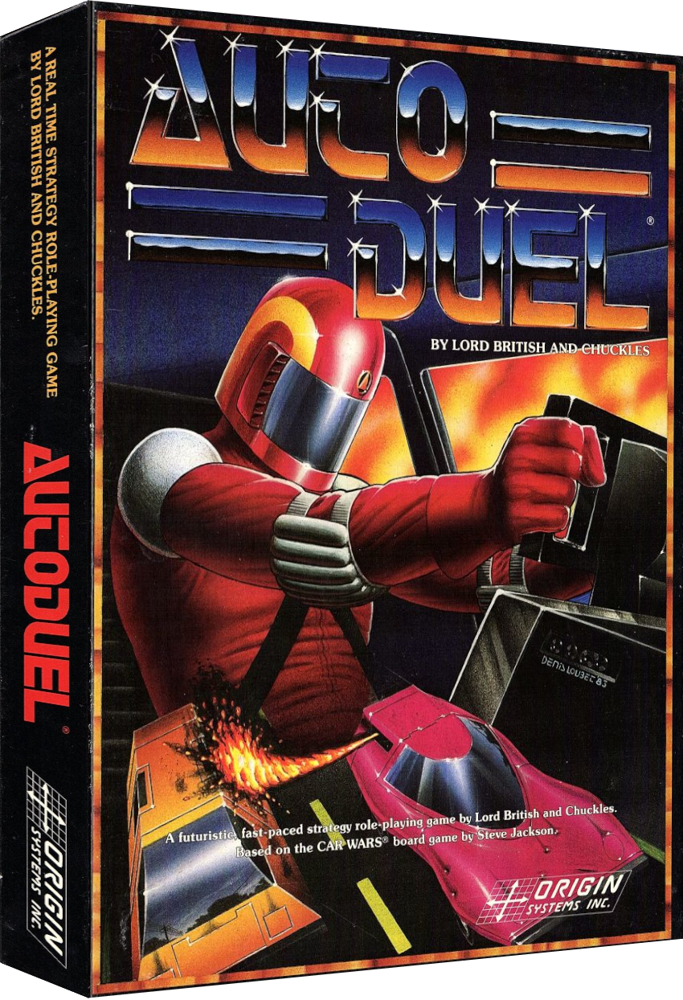

Welcome to Riders of the Wasteland 80s-retro mini-game!

In an an effort to give my tribute to the classic game, Autoduel from the mid-80s, I've written a javascript game heavily
based on the original game published by Origin Systems, Inc. designed by Chuck Bueche (Chuckles) and
Richard Garriott (Lord British). Who also wrote my all-time favorite games series, Ultima and Ultima Online.
Additionally, Autoduel was based on the incredible table top RPG by Steve Jackson, Car Wars. Please go check that
game out if you've never heard of it, or revisit again if its been years since you played!
To play the Riders of the Wasteland version click here:

(This is a work-in-progress as of Nov 2024. If it doesn't load the first time, hit Play again)
Credits
In game maps were created with: RPG Map Editor 2
Play button from: SimilarPNG
Player sprite by: Pinterest @isaiah658
House sprite on road: hiclipart.com
Car sprite made with: piskelapp